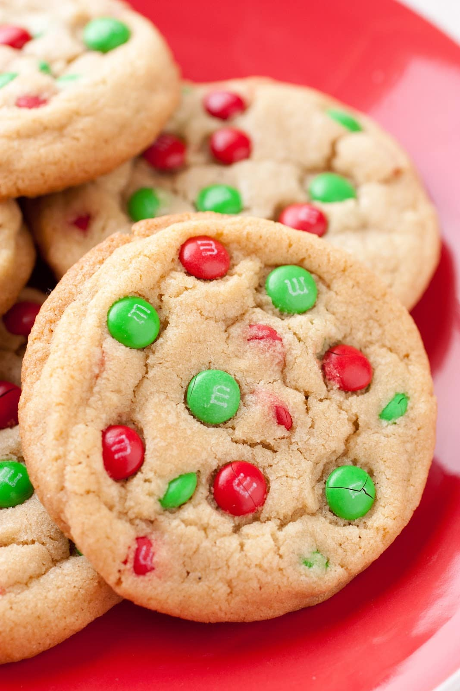

M&M Cookies

Description
M&Ms are a timeless classic at any holiday so what could be better than baking them into
holiday cookies? The only acceptable answer to this question is a big, loud, resounding
"NOTHING!"
These classic cookies are a twist on the traditional "chocolate chip cookie" recipe and
are guarenteed to drive the "bah, humbug" out of any scrooge in your life.
Ingredients
- 1/2 Cup Shortening (butter flavored is best)
- 1/4 Cup Sugar
- 1/s Cup Brown Sugar
- 1 teaspoon Vanilla
- 1 Egg
- 1 Cup 2 tablespoons Flour
- 1/2 teaspoons baking soda
- 1/2 teaspoons salt
- 3/4 Cup M&M Candies (holiday colors, of course!)
Steps
- Preheat oven to 375 degrees F. Line a baking sheet with parchment paper or a silicone baking mat.
- In a stand mixer or using a bowl and hand mixer, cream together the shortening,
sugar, and brown sugar until fluffy and light in color (about 2 minutes). Using a silicone spatula, scrape
down the sides and bottom of the bowl.
- Mix in egg and vanilla until combined. Scrape down the sides and bottom of the bowl.
- In a separate bowl, wisk together flour, baking soda, and salt.
- With the mixer running on low, gradually add the dry ingredients until just combined. Scrape down the
sides and bottom of the bowl.
- With a wooden spatula or spoon, stir in M&M candies until well distributed. Do not over-mix.
- Drop 2 Tablespoon portions of dough on the lined baking sheet approximately 1 inch apart. Bake for 10-12
minutes or until cookies are set around the outside and light brown in color.